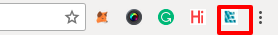

How to use extension¶
To use ekolink extenion, add extension to your chrome browser and follow the instruction below.
Navigate on a web page and activate the extension by clicking on extension icon.

Initial page - Get user info (user name) before capturing credential.

If you click on capture credential button without input your name, it will give the error.

Input the name and then click on Capture Credential button.
If user is on other then http or https web page he will get error.

On https/http web page


After clicking on submit button will be disable and show status saving.

You will get Success msg, after your credential successfully get submited.